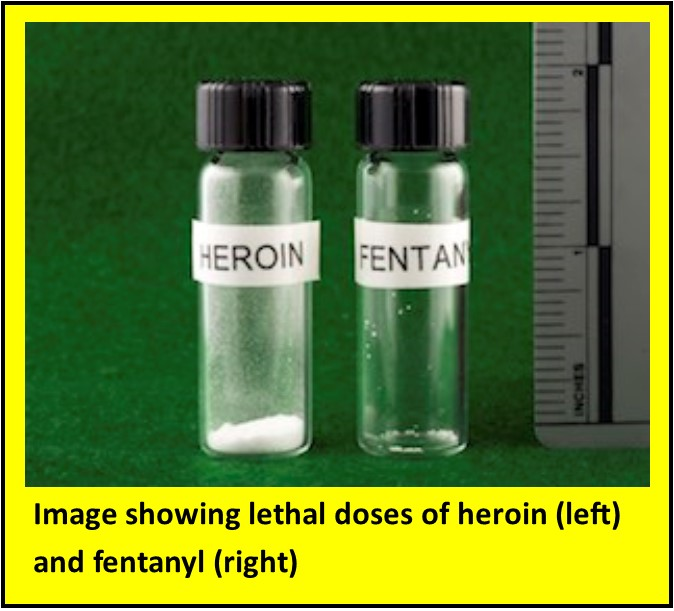
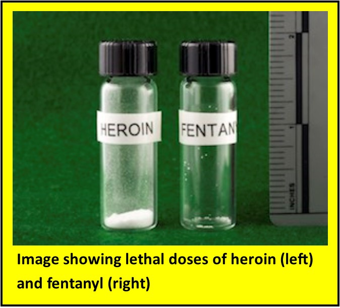
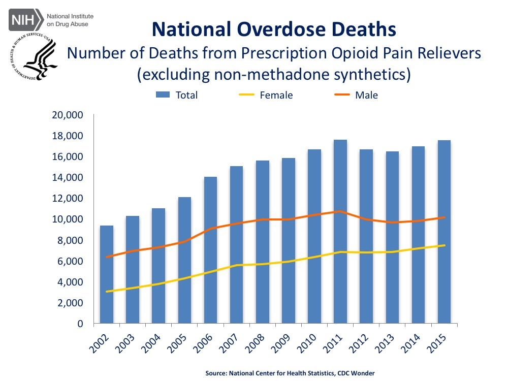
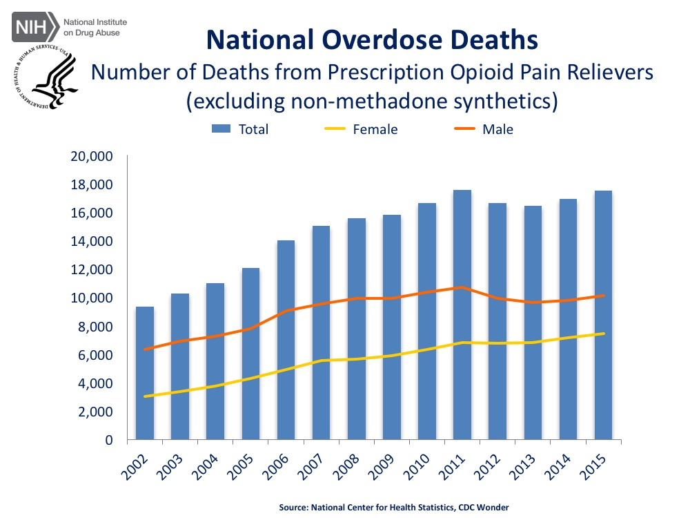
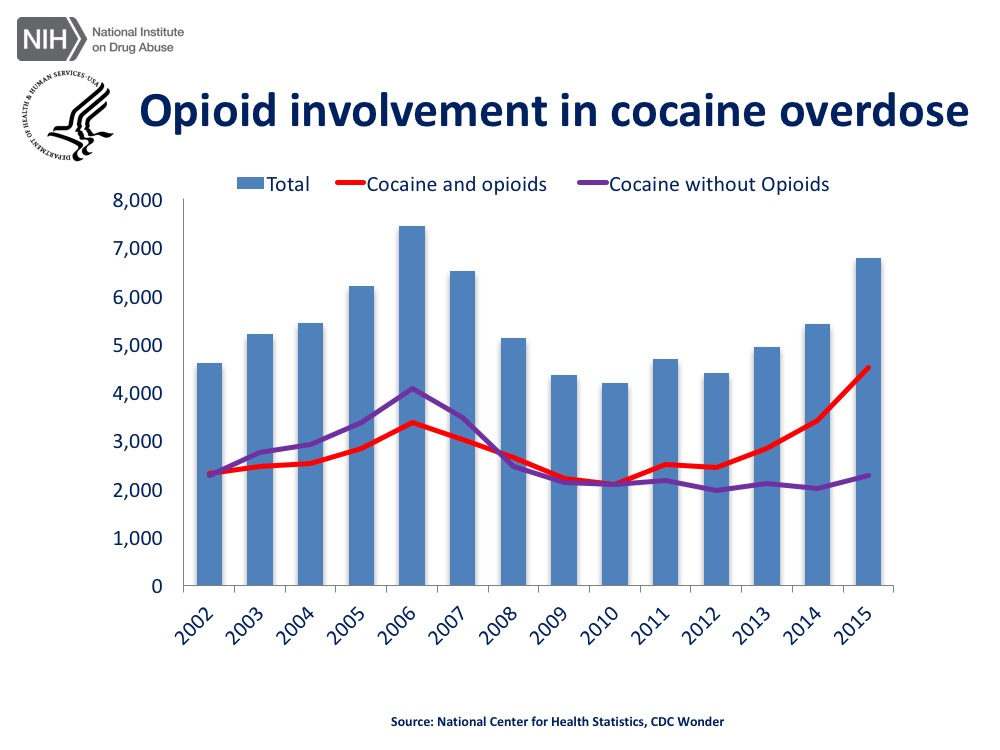
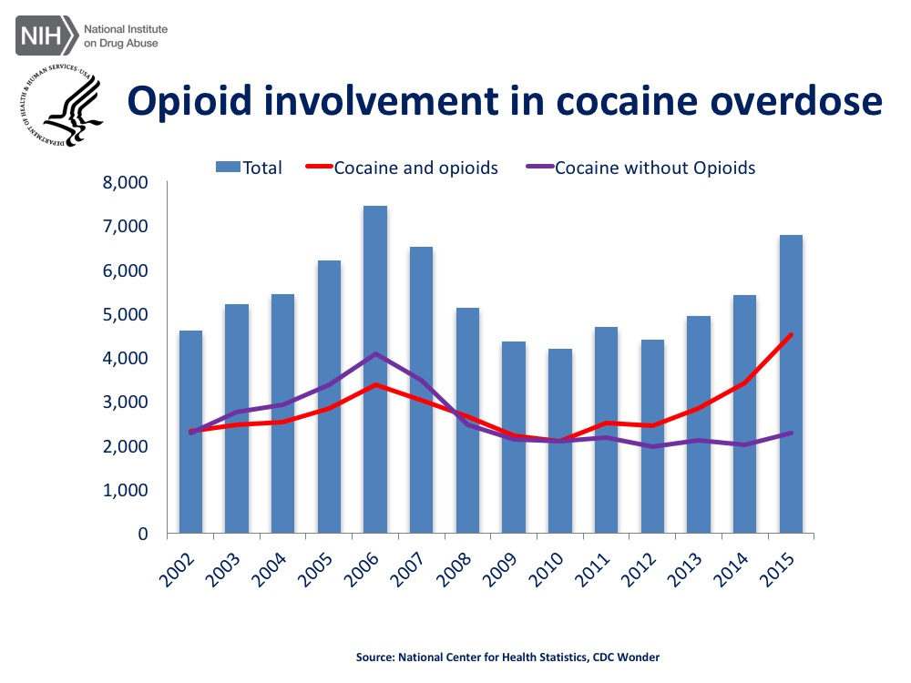

 


 

Regular heroin obtained on the street is derived from the poppy plant. Manufacturers “cook” heroin before selling it on the black market. Heroin itself is dangerous, as it is a central nervous system depressant. This means that it slows heart rate and breathing, leading to potentially deadly consequences. Furthermore, heroin is highly addictive, leading to compulsive drug-seeking behavior that individuals have difficulty controlling.
As dangerous as heroin alone can be, it is even more dangerous when laced with other substances. Heroin is most commonly laced with fentanyl, a synthetic opioid made in laboratories. Fentanyl can be 100 times as potent as morphine and 50 times as powerful as heroin. A related substance called carfentanyl is 100 times more powerful than fentanyl, making it very dangerous.
Because fentanyl and carfentanyl are produced in illicit labs, their potency and quality is not well controlled. Furthermore, people purchasing laced heroin on the street may be unaware that the drug is laced with these more powerful substances. This means that only a small amount of the drug can have deadly consequences. The Drug Enforcement Agency reports that Mexican cartels have accelerated smuggling of fentanyl over the past two years, which may be leading to the clusters of opioid-related overdose deaths occurring across the country.
In some cases, heroin may also be laced with cocaine, which is a central nervous system stimulant. Mixing a stimulant with a depressant can be particularly dangerous, as this combination can have very unpredictable effects.